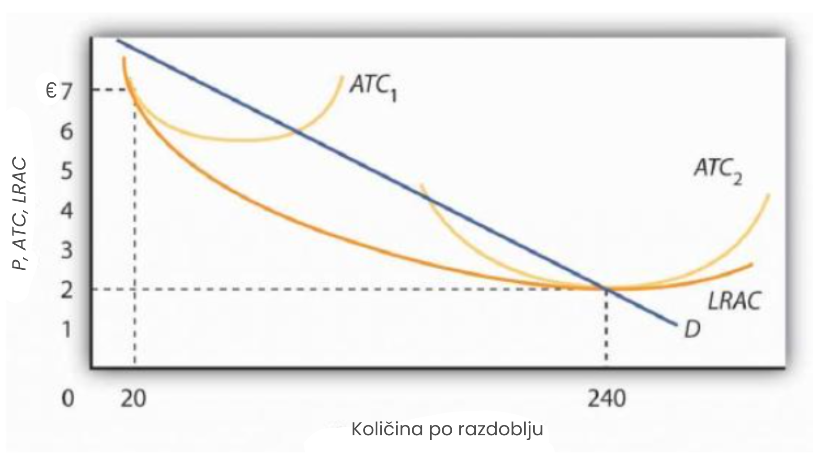

Priroda monopola
Monopol se nalazi na suprotnom kraju spektra tržišnih modela u odnosu na savršenu konkurenciju. Monopolističko poduzeće nema suparnike. Ono je jedino poduzeće u svojoj industriji. Ne postoje bliski supstituti za dobro ili uslugu koju monopol proizvodi. Ne samo da monopol ima tržište za sebe, već se ne mora brinuti ni zbog ulaska drugih poduzeća. U slučaju monopola, ulazak potencijalnih konkurenata je izuzetno otežan ili nemoguć.
Monopol ne prihvaća tržišnu cijenu kao zadanu; on sam određuje svoju cijenu. Odabire s vlastite krivulje potražnje cijenu koja odgovara količini koju je odlučio proizvesti, kako bi ostvario maksimalni mogući profit. Ulazak novih poduzeća, koji u dugom roku eliminira profit u konkurentskom tržištu, nije moguć u modelu monopola.
Poduzeće koje određuje cijenu na temelju svoje odluke o količini proizvodnje naziva se određivač cijene. Poduzeće koje djeluje kao određivač cijene posjeduje monopolsku moć. Vidjet ćemo u sljedećem poglavlju da monopol nije jedini oblik poduzeća koje posjeduje tu moć; međutim, odsutnost konkurenata daje monopolu znatno veću moć određivanja cijena.
Kao i u slučaju savršene konkurencije o kojoj smo govorili u prethodnom poglavlju, pretpostavke monopolskog modela su prilično stroge. Pretpostavkom da postoji samo jedno poduzeće na tržištu, pretpostavljamo da ne postoje druga poduzeća koja proizvode dobra ili usluge koje bi se mogle smatrati dijelom istog tržišta kao i monopol. Pretpostavkom blokiranog ulaska, pretpostavljamo — iz razloga o kojima ćemo raspravljati u nastavku — da nijedno drugo poduzeće ne može ući na to tržište. Takvi su uvjeti rijetki u stvarnom svijetu. Kao i uvijek s modelima, postavljamo pretpostavke koje definiraju monopol kako bismo pojednostavili našu analizu, a ne kako bismo opisali stvarni svijet. Rezultat je model koji nam daje važne uvide u prirodu poslovnih odluka i njihov utjecaj na gospodarstvo.
Izvori monopolske moći
Zašto su neka tržišta pod dominacijom jednog poduzeća? Koji su izvori monopolske moći? Ekonomisti su identificirali niz uvjeta koji, pojedinačno ili u kombinaciji, mogu dovesti do dominacije tržišta od strane jednog poduzeća i stvoriti prepreke koje sprječavaju ulazak novih poduzeća.
Prepreke ulasku su karakteristike određenog tržišta koje blokiraju ulazak novih poduzeća. One uključuju ekonomiju razmjera, posebne prednosti lokacije, visoke nepovratne troškove, dominantnu poziciju u vlasništvu nekih ulaznih resursa potrebnih za proizvodnju dobara te državne restrikcije. Te prepreke mogu biti međusobno povezane, što čini ulazak još težim. Iako te prepreke mogu omogućiti jednom poduzeću da stekne i zadrži monopolsku kontrolu nad tržištem, često postoje sile koje mogu nagrizati tu kontrolu.
Ekonomija razmjera
Ekonomija i neekonomija razmjera određuju oblik krivulje dugoročnih prosječnih troškova (LRAC) poduzeća kako ono povećava svoju proizvodnju. Ako dugoročni prosječni trošak opada kako razina proizvodnje raste, kaže se da poduzeće doživljava ekonomiju razmjera.
Poduzeće koje se suočava s ekonomijom razmjera u cijelom rasponu proizvodnje koja se traži u njegovoj industriji naziva se prirodnim monopolom. Primjeri su komunalne službe koje distribuiraju električnu energiju, vodu i prirodni plin nekim tržištima. U prirodnom monopolu, LRAC bilo kojeg poduzeća siječe krivulju tržišne potražnje tamo gdje su dugoročni prosječni troškovi u padu ili na minimumu. Ako je to slučaj, jedno će poduzeće u industriji proširiti svoju proizvodnju kako bi iskoristilo dostupne ekonomije razmjera. Budući da će to poduzeće imati niže jedinične troškove od svojih konkurenata, može ih istisnuti s tržišta i steći monopolsku kontrolu nad industrijom.
Pretpostavimo da postoji 12 poduzeća, od kojih svako posluje na razini prikazanoj krivuljom ATC1 (prosječni ukupni trošak) na slici. Poduzeće koje proširi razmjere poslovanja i postigne krivulju prosječnog ukupnog troška poput ATC2 moglo bi proizvesti 240 jedinica proizvodnje po nižem trošku nego manja poduzeća koja proizvode po 20 jedinica. Snižavanjem cijene ispod minimalnog prosječnog ukupnog troška manjih pogona, veće bi poduzeće moglo izbaciti manja iz poslovanja. U toj situaciji, potražnja industrije nije dovoljno velika da podrži više od jednog poduzeća. Ako bi drugo poduzeće pokušalo ući u industriju, prirodni monopolist bi ga uvijek mogao nadmašiti u cijenama.
Poduzeće s opadajućom krivuljom dugoročnih prosječnih troškova (LRAC) u cijelom rasponu proizvodnje relevantnom za postojeću potražnju (D) monopolizirat će industriju. U ovom slučaju, jedno poduzeće koje posluje s velikim postrojenjem (ATC2) proizvodi 240 jedinica proizvodnje po nižem trošku od 7 eura po jedinici, što je trošak 12 poduzeća koja posluju u manjem opsegu (ATC1) i svako proizvodi 20 jedinica proizvodnje.
Lokacija
Ponekad je monopolistička moć rezultat lokacije.
Na primjer, prodavači na tržištima koja su izolirana udaljenošću od svojih najbližih konkurenata imaju određeni stupanj monopolističke moći. Lokalno kino u malom gradu ima monopol u prikazivanju najnovijih filmova. Liječnici, stomatolozi i mehaničari u izoliranim mjestima također mogu biti monopolisti.
Nepovratni troškovi
Što su troškovi osnivanja novog poduzeća u nekoj industriji veći, to je teže ući u tu industriju. Ti će troškovi, zauzvrat, biti veći ako je malo vjerojatno da će se ulaganja potrebna za pokretanje poduzeća nadoknaditi u slučaju neuspjeha.
Zamislimo, na primjer, da ulazak u određenu industriju zahtijeva opsežno oglašavanje kako bi se potrošače upoznalo s novom markom. Ako taj pokušaj ne uspije, ne postoji način da se troškovi oglašavanja nadoknade. Trošak koji je već nastao i koji se ne može nadoknaditi naziva se utopljenim troškom.
Ako će značajan dio početnih ulaganja poduzeća biti izgubljen pri izlasku iz industrije, tada će izlazak biti skup. Težak izlazak može značiti i težak ulazak. Što više poduzeća može izgubiti neuspješnim pokušajem prodora na neko tržište, to je manja vjerojatnost da će pokušati. Potencijalno visoki utopljeni troškovi stoga mogu pridonijeti monopolističkoj moći postojećeg poduzeća tako što otežavaju ulazak drugim poduzećima.
Ograničeno vlasništvo nad sirovinama i inputima
U vrlo rijetkim slučajevima izvor monopolističke moći je vlasništvo nad strateškim sirovinama. Ako određeno poduzeće posjeduje sve zalihe nekog inputa potrebnog za proizvodnju određenog dobra ili usluge, tada bi ono moglo postati jedini proizvođač tog dobra ili usluge.
Tvrtka Aluminum Company of America (ALCOA) stekla je monopolističku moć zahvaljujući vlasništvu nad gotovo svim nalazištima boksita na svijetu (boksit je sirovina za aluminij). Tvrtka International Nickel Company iz Kanade u jednom je trenutku posjedovala gotovo sve svjetske zalihe nikla. De Beers je stekao prava na gotovo svu svjetsku proizvodnju dijamanata, što mu je dalo ogromnu moć na tržištu dijamanata. Međutim, s razvojem novih izvora dijamanata u Kanadi, Australiji i Rusiji, koji se prodaju neovisno o De Beersu, ta je moć oslabila, te danas De Beers kontrolira znatno manji postotak svjetske ponude.
Vladina ograničenja
Još jedna važna osnova monopolističke moći su posebne povlastice koje državne agencije dodjeljuju određenim poslovnim subjektima. Državne i lokalne vlasti često su dodjeljivale ekskluzivne franšize — prava za obavljanje djelatnosti na određenom tržištu—taksi i autobusnim prijevoznicima, kabelskim televizijskim tvrtkama te pružateljima telefonskih usluga, električne energije, prirodnog plina i vode, premda je u posljednjim godinama sve češći trend poticanja konkurencije u mnogim od tih usluga. Vlade također mogu regulirati ulazak u industriju ili profesiju putem licenci i uvjeta za certificiranje. Također, država pruža zaštitu patentom izumiteljima novih proizvoda ili metoda proizvodnje kako bi potaknula inovacije; ti patenti mogu nositeljima omogućiti određeni stupanj monopolističke moći tijekom 17-godišnjeg trajanja patenta.
Patenti mogu imati dodatnu važnost kada su prisutni mrežni učinci. Mrežni učinci nastaju u situacijama kada proizvod postaje korisniji što ga koristi veći broj korisnika. Na primjer, jedna od prednosti korištenja Windows operativnog sustava jest ta što ga koristi velik broj ljudi. To ima prednosti kada je riječ o dijeljenju datoteka i drugih informacija.
Sažetak
- Industrija u kojoj postoji samo jedno poduzeće, a ulazak drugih je blokiran, naziva se monopol.
- Poduzeće koje određuje ili bira cijenu ovisno o svojoj odluci o količini proizvodnje naziva se određivačem cijene. Određivač cijene posjeduje monopolsku moć.
- Izvori monopolske moći uključuju ekonomiju razmjera, prednosti lokacije, visoke nepovratne troškove povezane s ulaskom na tržište, ograničeno vlasništvo nad ključnim sirovinama te državna ograničenja kao što su ekskluzivne franšize, zahtjevi za licenciranje i certificiranje te patenti.
- Poduzeće koje ostvaruje ekonomiju razmjera kroz cijeli raspon proizvodnje koju zahtijeva industrija naziva se prirodni monopol.